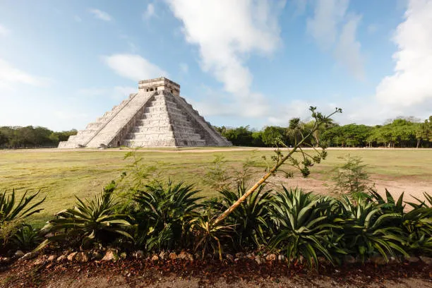
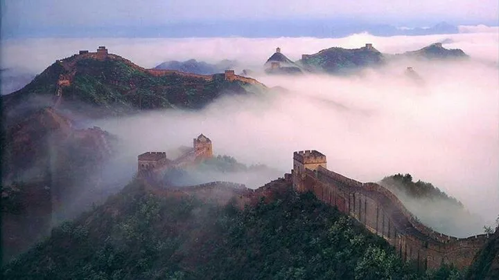
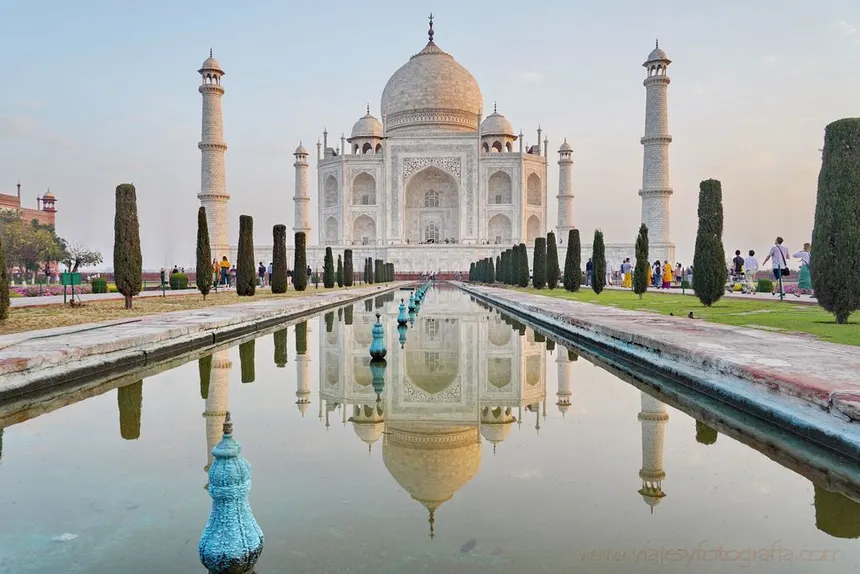
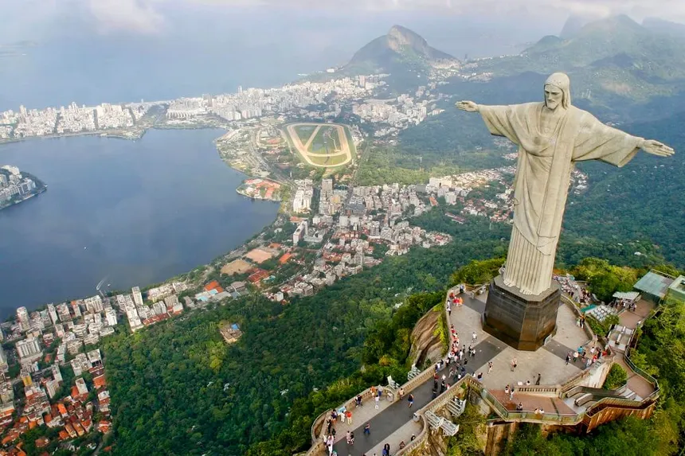
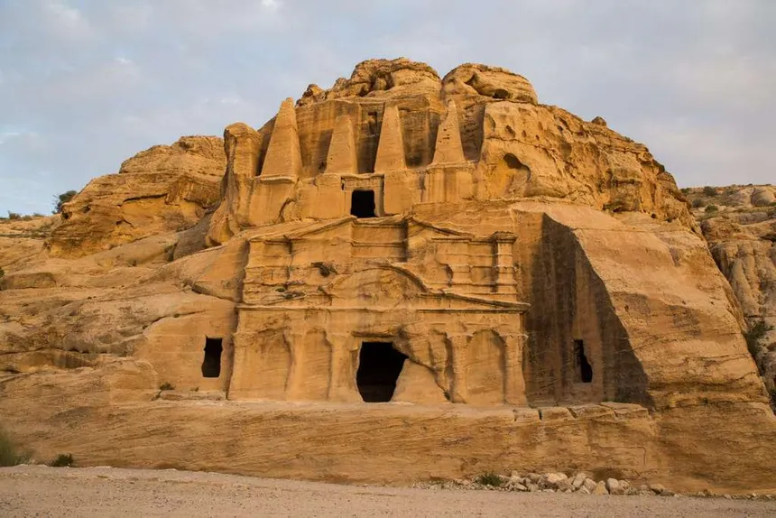
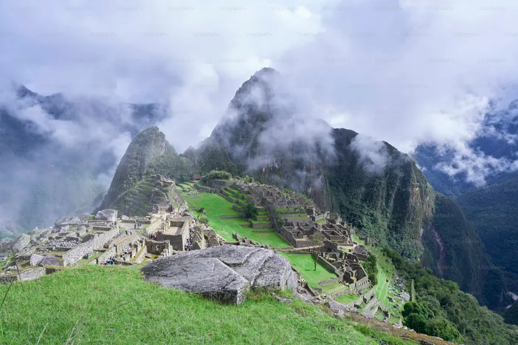

Chichén Itzá
Publicado por Ignacio Bruno en Octubre de 2025

Chichén Itzá fue uno de los principales centros políticos, económicos y religiosos de la civilización maya, ubicado en la península de Yucatán, México.
Su monumento más emblemático es “El Castillo”, una pirámide de 24 metros dedicada al dios Kukulkán.
Durante los equinoccios, la luz del sol crea la ilusión de una serpiente descendiendo por sus escaleras.
Leer más...
Muralla China
Publicado por Ignacio Bruno en Octubre de 2025

La Gran Muralla China, con más de 21.000 km de longitud, fue construida para proteger el territorio de las invasiones del norte, especialmente de los mongoles.
Sus primeras secciones se levantaron en el siglo VII a.C., pero fue el emperador Qin Shi Huang quien unificó y extendió la muralla alrededor del 221 a.C.
Hecha de piedra, tierra apisonada y ladrillos, atraviesa montañas, valles y desiertos.
Es símbolo de la fuerza y la perseverancia del pueblo chino, y también una de las mayores obras de ingeniería de la humanidad.
Leer más...
Taj Mahal
Publicado por Ignacio Bruno en Octubre de 2025

El Taj Mahal, situado en Agra (India), fue mandado construir por el emperador Shah Jahan en honor a su esposa Mumtaz Mahal,
quien murió al dar a luz a su decimocuarto hijo. Su construcción tardó 22 años y participaron más de 20.000 obreros.
El edificio combina estilos arquitectónicos islámico, persa, indio y turco. Su cúpula de mármol blanco y sus jardines simétricos representan la perfección y la pureza.
Es considerado el máximo símbolo del amor eterno.
Leer más...
Coliseo Romano
Publicado por Ignacio Bruno en Octubre de 2025

El Coliseo, también conocido como Anfiteatro Flavio, fue inaugurado en el año 80 d.C. y podía albergar hasta 50.000 espectadores.
Allí se realizaban combates de gladiadores, simulacros navales y espectáculos públicos.
Es un ícono de la ingeniería romana, construido con piedra caliza y hormigón.
Aunque sufrió daños por terremotos y saqueos, sigue siendo el monumento más visitado de Italia.
Leer más...
Cristo Redentor
Publicado por Ignacio Bruno en Octubre de 2025

Ubicado en Río de Janeiro, Brasil, el Cristo Redentor es una estatua de 38 metros de altura situada en la cima del cerro del Corcovado.
Fue inaugurada en 1931 y representa la paz y la fe del pueblo brasileño.
Construido con hormigón armado y revestido con piedra jabonosa, fue declarado Patrimonio de la Humanidad en 2007.
Es una de las imágenes más reconocibles del mundo y un símbolo de la hospitalidad carioca.
Leer más...
Petra (Jordania)
Publicado por Ignacio Bruno en Octubre de 2025

Petra fue la capital del antiguo reino nabateo, tallada directamente en las montañas de arenisca del sur de Jordania.
Su construcción data del siglo VI a.C. y destaca por sus impresionantes fachadas como “El Tesoro” y “El Monasterio”.
Conocida como “la ciudad rosa”, Petra era un punto clave en las rutas comerciales entre Arabia, Egipto y Siria.
En 1985 fue declarada Patrimonio de la Humanidad y es uno de los destinos arqueológicos más visitados del planeta.
Leer más...
Machu Picchu
Publicado por Ignacio Bruno en Octubre de 2025

Machu Picchu, situada en lo alto de los Andes peruanos, fue una ciudad sagrada del Imperio Inca, construida alrededor del siglo XV por el emperador Pachacútec.
Abandonada durante la conquista española, fue redescubierta en 1911 por Hiram Bingham.
Su arquitectura, perfectamente adaptada al entorno natural, demuestra los avanzados conocimientos de ingeniería y astronomía de los incas.
Leer más...